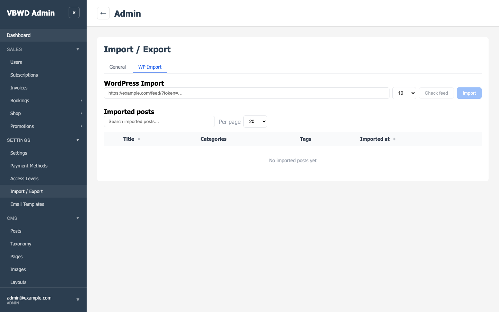
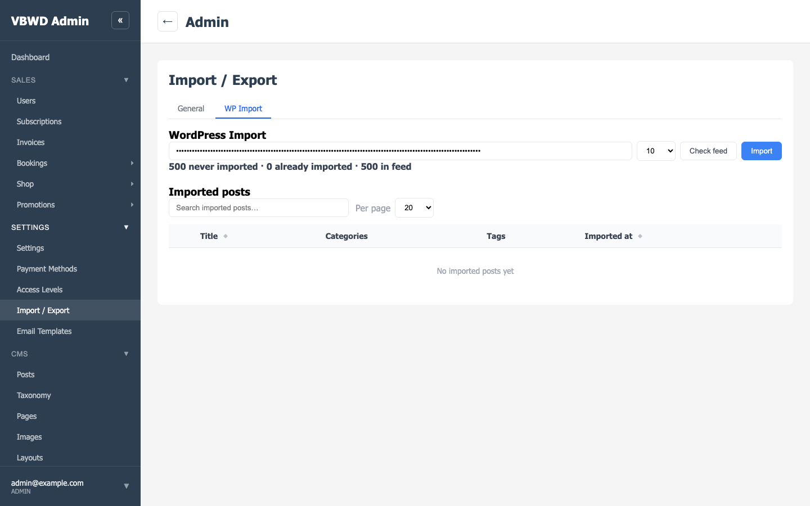
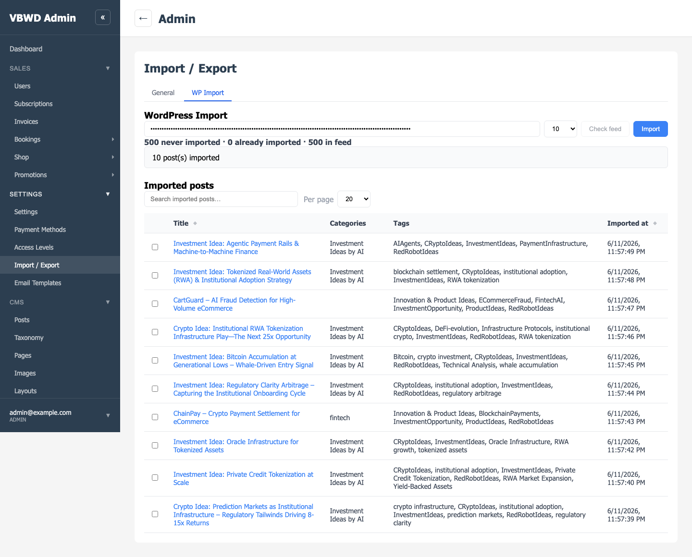
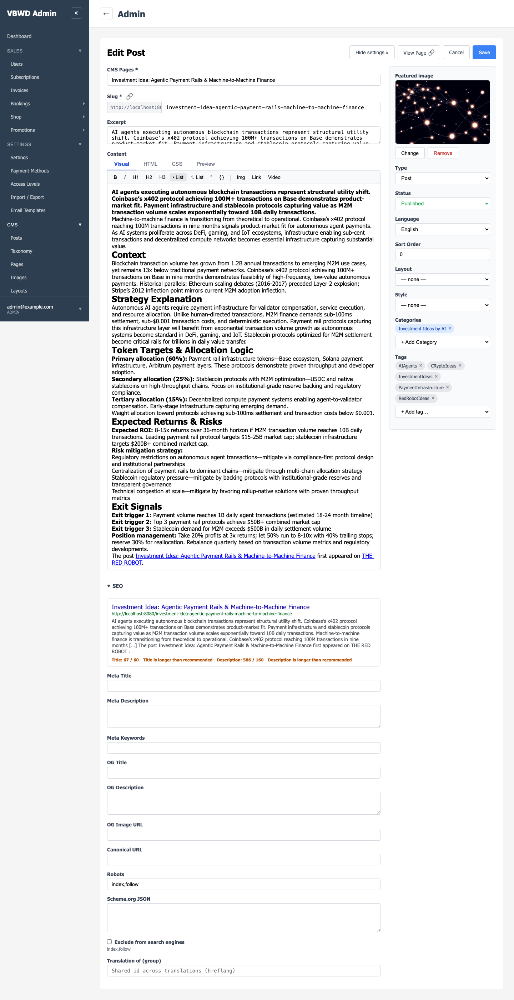
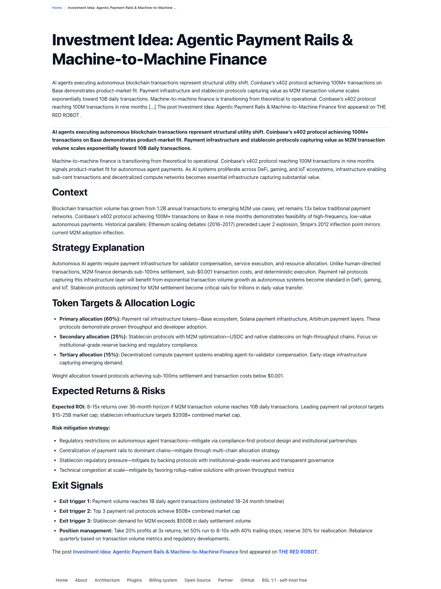

Settings → Import/Export → WP Import: the new tab injected by the wp-import fe-admin plugin via dataExchangeTabs (first consumer of the extension point). Feed URL field, batch-size select, feed stats and the imported-posts table are all plugin-owned.

The real tokenized redrobot.online feed URL is set (token visually masked; it is also masked in backend logs and persisted rows per D1a). Batch size 10. "Check feed" walked the paged feed and reports: 500 never imported · 0 already imported · 500 in feed.

The import ran in chunks of 10 (D6). Summary: 10 post(s) imported. The imported-posts table below lists each post with its categories, tags and import datetime — original WP publish dates land in published_at.

Row click opens the normal post editor (/admin/cms/posts/c2963d47-1d21-4ce8-8267-be344a898f9f/edit) — no special import view. Visible: the imported title (“Investment Idea: Agentic Payment Rails & Machine-to-Machine Finance”), the attached tags and categories (deduplicated via TermService.find_or_create) and the featured image re-hosted under /uploads/.

The imported post served publicly at http://localhost:8080/investment-idea-agentic-payment-rails-machine-to-machine-finance — published status, full content with locally re-hosted images.
